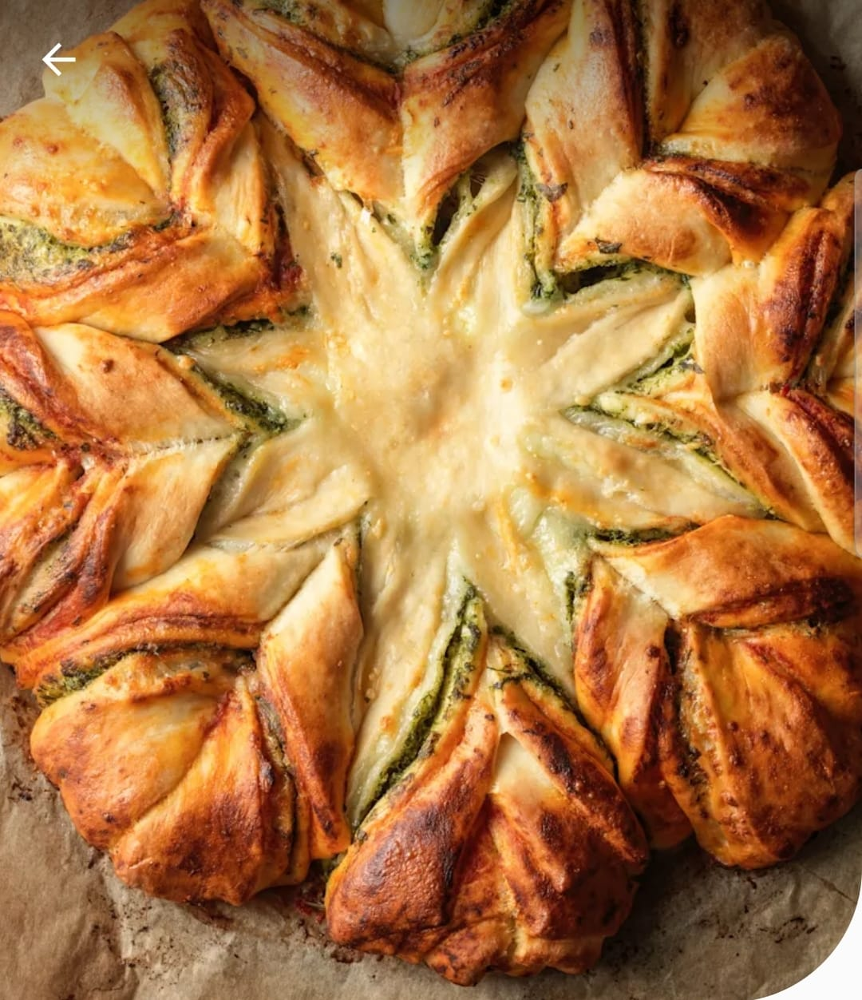

Pesto Star Bread with Thermomix

Description
Delicious bread with a twist
Ingredients
- Dough
- 115g milk
- 60g water
- 15g dried instant yeast
- 1 large egg
- 35g olive oil
- 10g garlic powder
- 5g fine sea salt
- Pesto
- 250g mozzzarella
- 40g pecorino cheese
- 10g pine nuts
- 2 garlic cloves
- 40g fresh basil leaves
- 70g extra virgin oil
- 10g fine sea salt
- Assembly
- 1 medium egg
- 120g passata
- 10g garlic power
- 10g dried oregano
- 5g ground black pepper
Steps
- Place milk, water and yeast in mixing bowl, then warm 2 min/37°C/speed 1.
- Add flour, oil, egg, garlic powder and salt, then knead Dough 5 min.
Transfer to greased bowl, cover, and leave to rise until doubled in size (approx. 1 hour).
- Grate mozzarella in mixing bowl 3 sec/speed 8. Transfer to a bowl and set aside.
- Grate pecorino in mixing bowl 15 sec/speed 10. Set aside.
- Add pine nuts, basil, oil, garlic and salt, then chop 20 sec/speed 7.
Transfer pesto to a bowl and set aside.
- On a lightly floured surface, divide rested dough into four equal-sized pieces and shape into balls.
Roll out one ball into a disc (Ø 28 cm). Place on baking tray and brush border with egg wash.
- Spread passata over dough, leaving a 2 cm border. Sprinkle with garlic powder, oregano, and pepper.
- Roll out second ball of dough (Ø 25 cm), place on top, and brush border with egg wash.
Spread pesto, leaving 2 cm border.
- Roll out third ball of dough (Ø 25 cm), place on top, brush with egg wash.
Sprinkle grated mozzarella, leaving a 2 cm border.
Roll last ball of dough into a disc (Ø 25 cm) and place on top.
- Press a 5 cm cookie cutter gently in the center (without cutting through).
Slice dough into 16 equal strips from center to edge.
- Take two adjacent strips, twist them away from each other twice,
then pinch ends together to form star-like points. Repeat with all strips.
- Cover with greased cling film and leave to prove in a warm place for approx. 45 min.
Preheat oven to 200°C near the end of proving.
- Brush with egg wash. Bake 15–17 min at 200°C until golden brown.
- Cool on tray for 5 minutes, then serve warm so guests can tear off pieces.